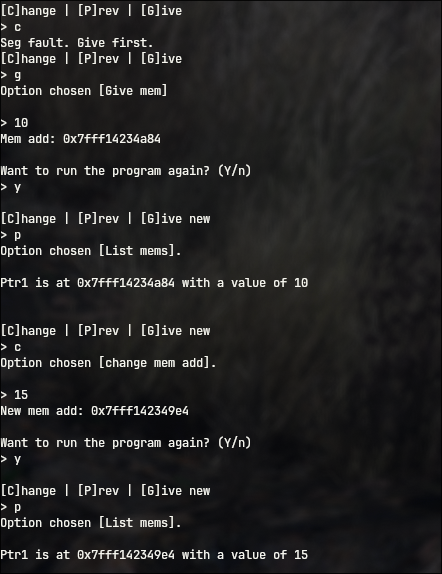

Written in: 
This honestly was a pretty decent project. It has a save system, a redo system, and it also uses pointers. The project actually hurt my brain a little bit, but it was pretty fun. It was also my first time working seriously with pointers, so I got a lot of dangling pointers and seg faults. It also dealt with error handling and had a lot of files.
Heres the link to the project: memory
Heres the output
